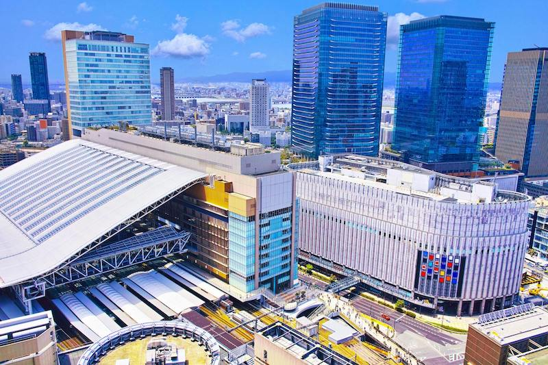
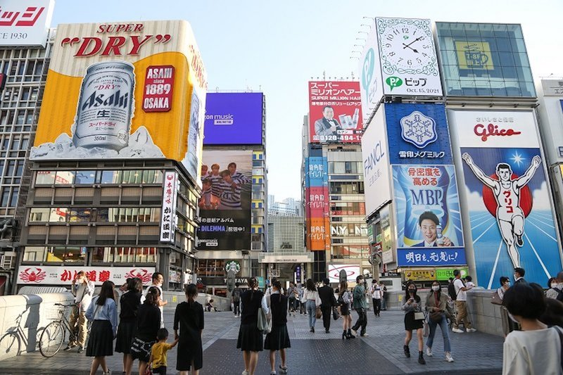
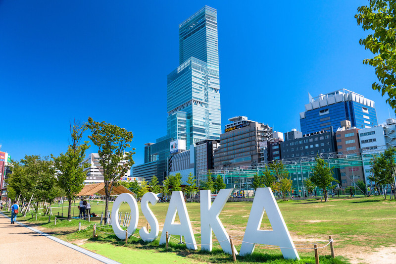
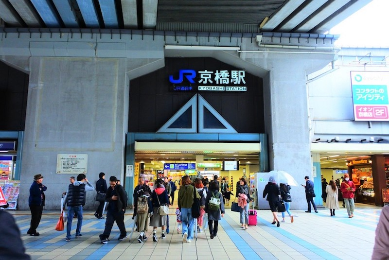

まずはエリアを選んでね！
エリアの説明は下にあるよ！

梅田
梅田や北新地を中心した広域な繁華街は、「キタ」と呼ばれ、大阪では「ミナミ」と双璧を成す一大商業エリア。
主な飲みスポットは、大阪駅前ビル、お初天神、北新地など。特に駅ビルは安く飲める店がたくさんある。
なんば
梅田を中心とする「キタ」と並んで大阪における商業の中心地である。訪日外国人で賑わっている。
主な飲みスポットは「裏なんば」「座裏」が有名。宗右衛門町（そえもんちょう）はぼったくり店が多い。


天王寺
「キタ」「ミナミ」に次ぐ繁華街。日本で2番目に高いビルのあべのハルカスが象徴的。
主な飲みスポットは「裏天王寺」、駅ビル。近くに西成もあり路地を1本入れば下町情緒残る街並みも。
京橋
JR西日本大阪環状線・片町線（学研都市線）・JR東西線、京阪本線、Osaka Metro長堀鶴見緑地線が乗り入れる大阪屈指のターミナル駅。
主な飲みスポットは駅周辺に数多く点在。サラリーマンが多いため安く飲める店が多い。
